16. RM ANOVA
Repeated & Mixed
In this lecture we aim to:
- Refresh some concepts from previous lectures
- Introduce RM ANOVA
- Introduce Mixed ANOVA
- Show these in JASP
Reading: Chapter 14
What have we learned so far?
- Explaining variance…
- Partitioning explained variance
- For each predictor, what is its model sum of squares?
- Divide by the error sum of squares of the full model (with all predictors) \(\rightarrow\) F-ratio
Having multiple predictors - interaction
- Interaction effects
- For example Labocat Leni 13
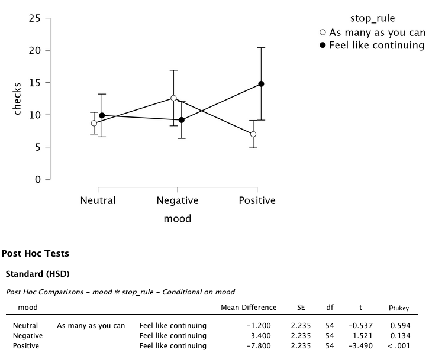
Having multiple predictors - interaction
Assess with:
- Descriptives plots
- Conditional post hoc tests
- Simple main effects
Having multiple predictors - dependence
Check independence: dependence = explaining the same variance
For example seeing if stress levels differ between two types of therapy
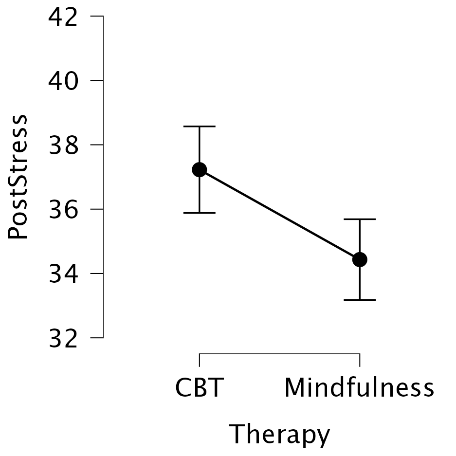
Having multiple predictors - dependence
Avoid by:
- Experimental manipulation
- Randomization
- Matching
Assess with:
- ANOVA (if categorical + continuous)
- Correlation (if continuous + continuous) \(\rightarrow\) block 3
- Chi-squared (if categorical + categorical) \(\rightarrow\) block 3
Contrasts
Contrast 1: compare no alcohol to alcohol
Contrast 2: compare two alcohol conditions
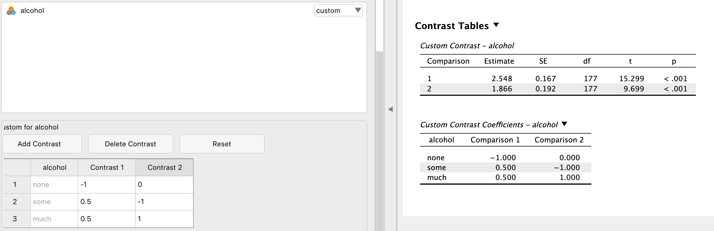
Assumptions
- Know which ones are relevant
- Know how to assess them
- How to apply corrections in JASP (for unequal variances, sphericity)
ANOVA
One-way repeated
One-way repeated measures ANOVA
The one-way repeated measures ANOVA analyses the variance of the model while reducing the error by the within person variance.
- 1 dependent/outcome variable
- 1 independent/predictor variable
- 2 or more levels
- All with same subjects
Assumptions
- Continuous dependent variable
- Normally distributed
- Q-Q plots
- Shapiro-Wilk
- Equality of variance of the within-group differences
- Mauchly’s test of Sphericity
- See Field 14.5, table 14.2, Jane Superbrain boxes 14.2 and 14.3
- Always met when having only 2 levels
Formulas
| Variance | Sum of Squares | df | Mean Squares | F-ratio |
|---|---|---|---|---|
| Between | \({SS}_{{between}} = {SS}_{{total}} - {SS}_{{within}}\) | \({DF}_{{total}}-{DF}_{{within}}\) | \(\frac{{SS}_{{between}}}{{DF}_{{between}}}\) | |
| Within | \({SS}_{{within}} = \sum{s_i^2(n_i-1)}\) | \((n_i-1)n\) | \(\frac{{SS}_{{within}}}{{DF}_{{within}}}\) | |
| • Model | \({SS}_{{model}} = \sum{n_k(\bar{X}_k-\bar{X})^2}\) | \(k-1\) | \(\frac{{SS}_{{model}}}{{DF}_{{model}}}\) | \(\frac{{MS}_{{model}}}{{MS}_{{error}}}\) |
| • Error | \({SS}_{{error}} = {SS}_{{within}} - {SS}_{{model}}\) | \((n-1)(k-1)\) | \(\frac{{SS}_{{error}}}{{DF}_{{error}}}\) | |
| Total | \({SS}_{{total}} = s_{grand}^2(N-1)\) | \(N-1\) | \(\frac{{SS}_{{total}}}{{DF}_{{total}}}\) |
Where \(n_i\) is the number of observations per person and \(k\) is the number of conditions. These two are equal for a one-way repeated ANOVA. Furthermore \(n\) is the number of subjects per condition and \(N\) is the total number of data points \(n \times k\).
Example
Measure driving ability in a driving simulator. Test in three consecutive conditions where participants come back to attend the next condition.
- Alcohol none
- Alcohol some
- Alcohol much
The data
Wide vs. long data formats
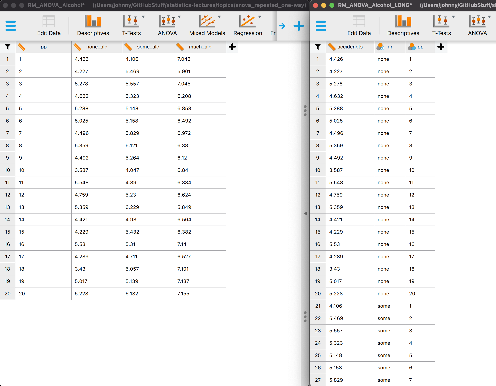
General flow RM ANOVA
- We look at total variance
- We divide it:
- Within subject variance
- Between subject variance
How much of the within subject variance can we explain by looking at alcohol condition?
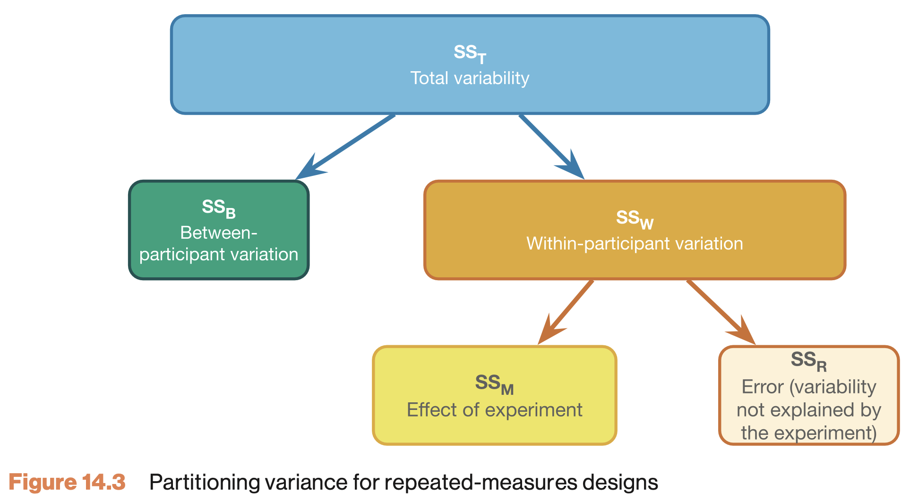
Total variance (SS total) - visual
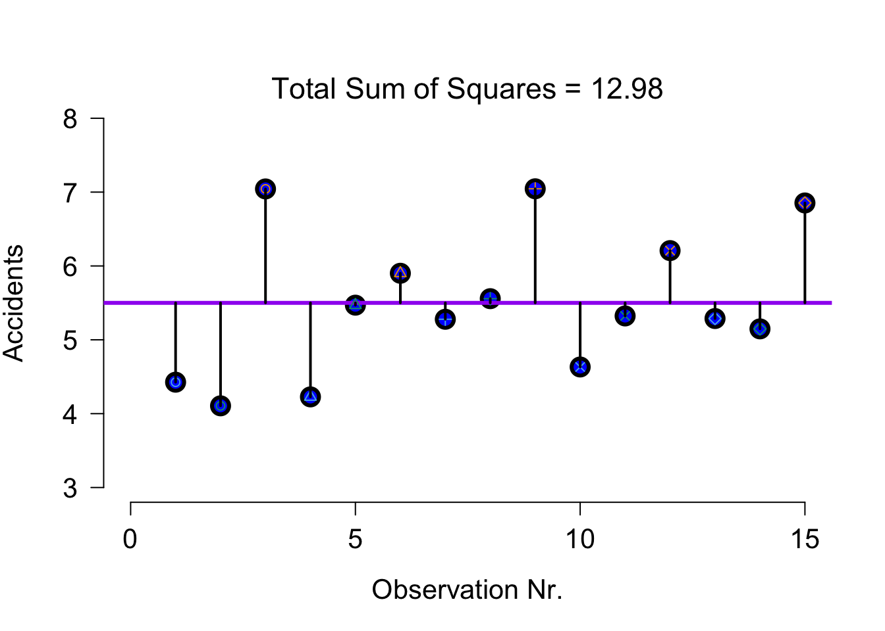
Within subject variance (\(SS_W\))
\({SS}_{{within}} = \sum{s_i^2(n_i-1)}\)
[1] 11.54771Within subject variance (\(SS_W\)) - visual
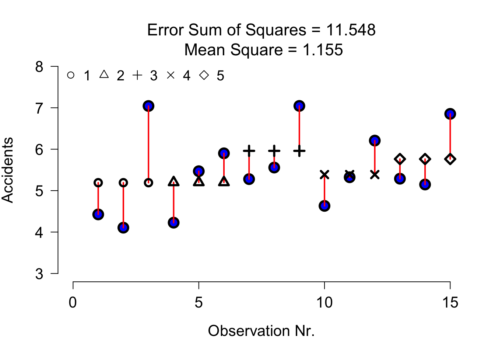
Within subject variance (\(SS_W\)) - data
Alcohol model SS (\(SS_M\))
\({SS}_{model} = \sum{n_k(\bar{X}_k-\bar{X})^2}\)
[1] 9.543261Alcohol model SS visual
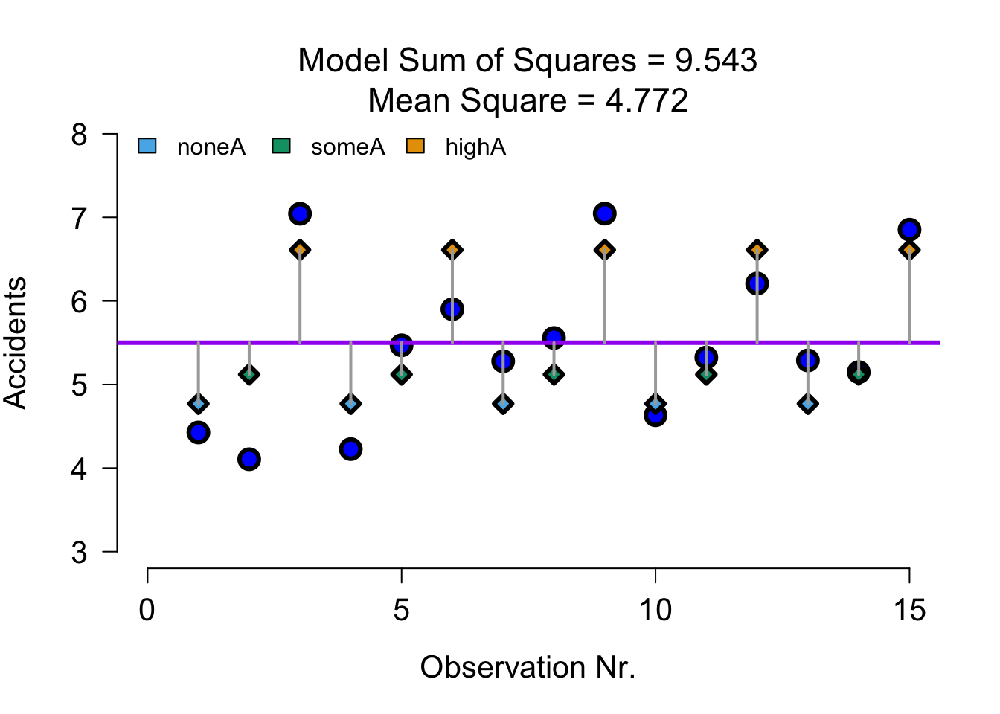
Full model SS visual
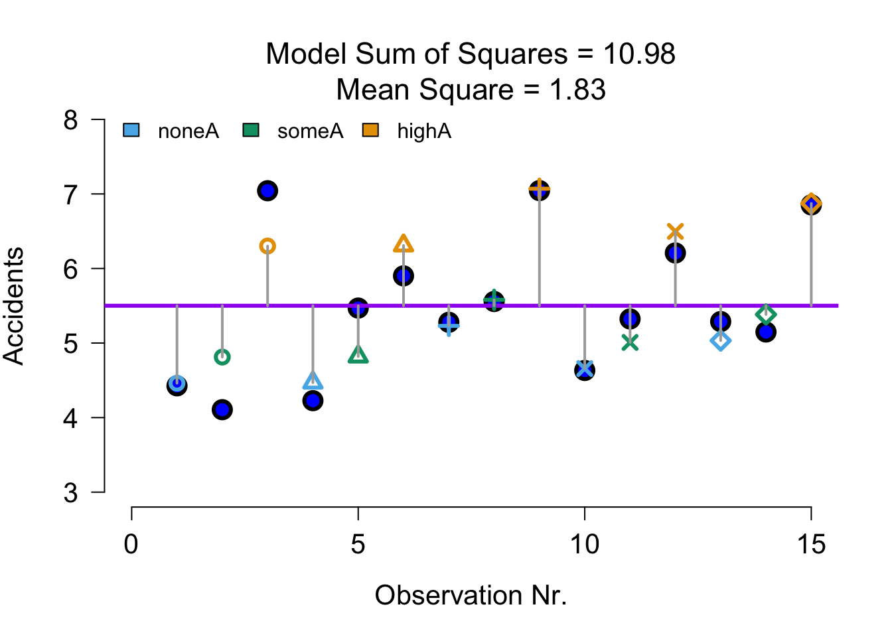
Full model error SS visual (\(SS_R\))
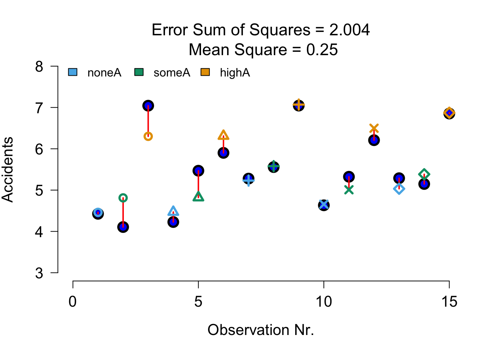
We use full model error to compute F for alcohol
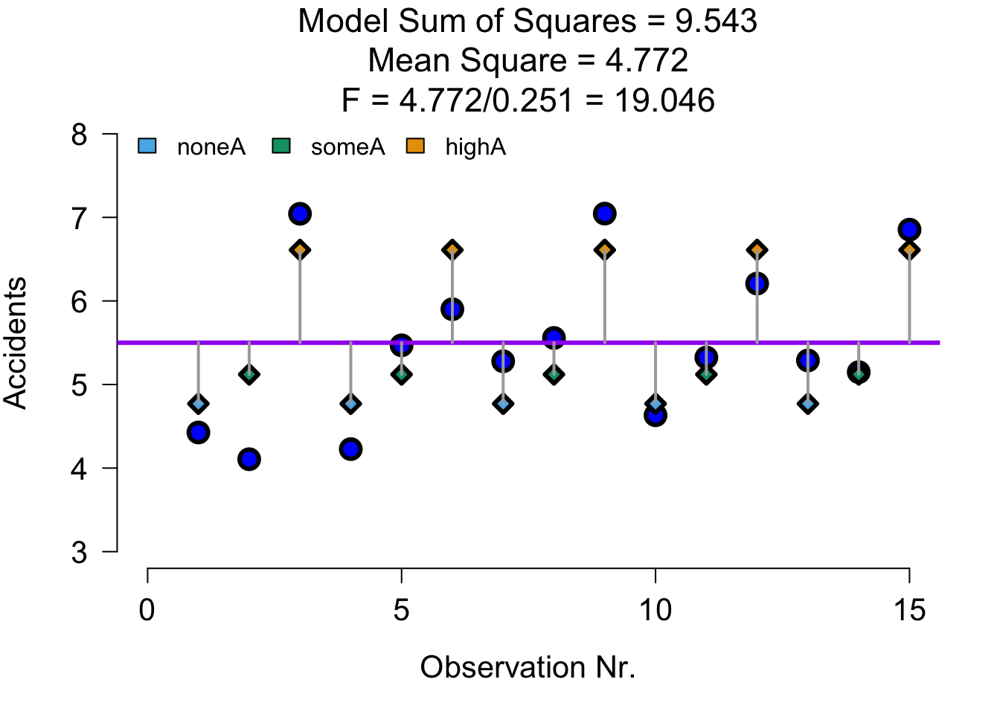
F ratio
\(F = \frac{{MS}_{{model}}}{{MS}_{{error}}}\)
# Calculate F statistic
fStat <- MS_model / MS_error
fStat[1] 19.04416P-value
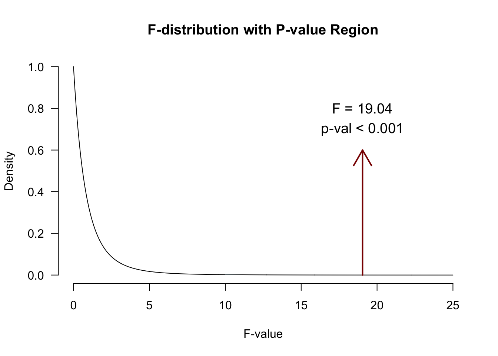
Contrast
Planned comparisons
- Exploring differences of theoretical interest
- Higher precision
- Higher power
Post-Hoc
Unplanned comparisons
- Exploring all possible differences
- Adjust p-value for inflated type 1 error
JASP

ANOVA factorial repeated
Factorial repeated measures ANOVA
The factorial repeated measures ANOVA analyses the variance of the model while reducing the error by the within person variance.
- 1 dependent/outcome variable
- 2 or more independent/predictor variable
- 2 or more levels
- All with same subjects
Assumptions
Same as one-way repeated measures ANOVA
Example
In this example we will again look at the amount of accidents in a car driving simulator while subjects where given varying doses of speed and alcohol. But this time we lat participants partake in all conditions. Every week subjects returned for a different experimental condition.
- Dependent variable
- Accidents
- Independent variables
- Speed
- None
- Small
- Large
- Alcohol
- None
- Small
- Large
- Speed
| person | 1_1 | 1_2 | 1_3 | 2_1 | 2_2 | 2_3 | 3_1 | 3_2 | 3_3 |
|---|---|---|---|---|---|---|---|---|---|
| 1 | 1 | ||||||||
| 2 | 2 | ||||||||
| 3 | 3 | ||||||||
| 4 | 4 | ||||||||
| 5 | 5 | ||||||||
| 6 | 6 | ||||||||
| 7 | 7 | ||||||||
| 8 | 8 | ||||||||
| 9 | 9 |
Data
Mixed design ANOVA
Mixed design
The mixed ANOVA analyses the variance of the model while reducing the error by the within person variance.
- 1 dependent/outcome variable
- 1 or more independent/predictor variable with different subjects
- 2 or more levels
- 1 or more independent/predictor variable with same subjects
- 2 or more levels
Assumptions
Same as repeated measures ANOVA and same as factorial ANOVA.
Example
- Dependent variable
- Accidents
- Independent variables
- Speed (same subjects)
- None
- Small
- Large
- Alcohol (same subjects)
- None
- Small
- Large
- Daytime
- Morning
- Evening
- Speed (same subjects)
Data
Closing
Recap
- In a repeated measures design we can account for baseline differences, to reduce the overall model error
- With within-subjects predictors, we need to check:
- Sphericity (equal variances of difference scores)
- With between-subjects predictors, we need to check:
- Equal variances of groups
Recommended Exercises
- Exercise 14.4, Exercise 14.5
- To understand mechanics of RM ANOVA, Exercise 14.1
- No sums of squares or effect size calculations required for the exam
Contact